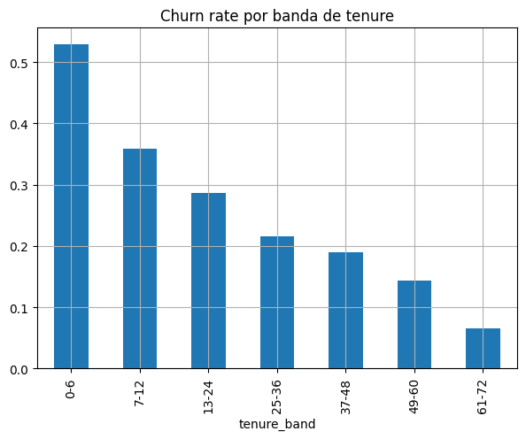
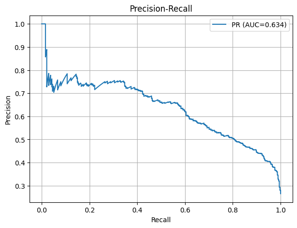
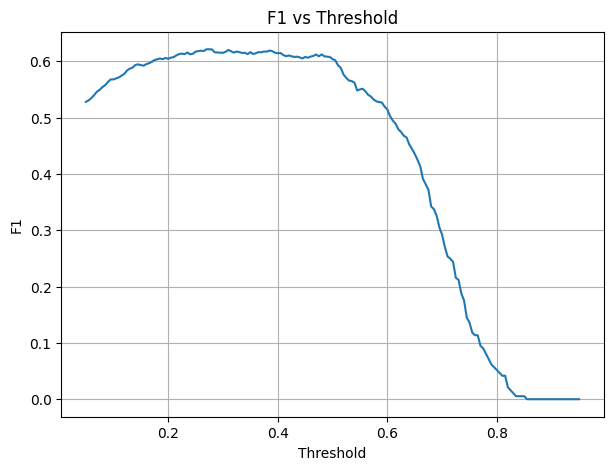
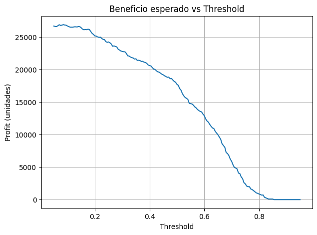
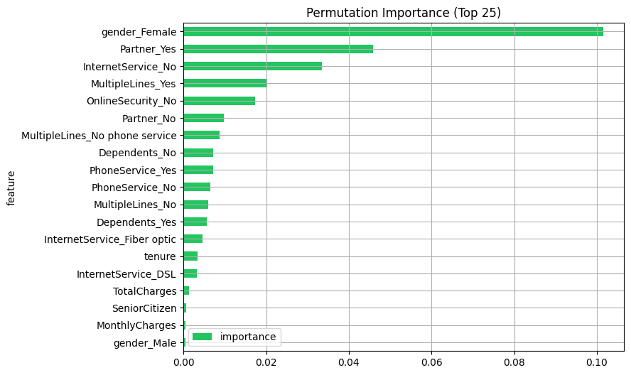
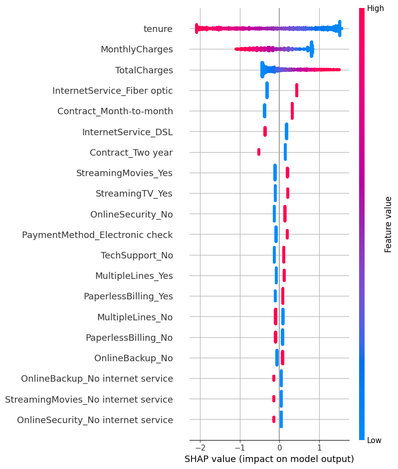

# Si corres en un entorno limpio, descomenta para instalar dependencias adicionales
# %pip install scikit-learn pandas numpy matplotlib seaborn xgboost shap lifelines plotlyTelco Customer Churn — End-to-End (IBM/Kaggle)
Autor: devdanielcoding · Fecha: 2025-10-14 (UTC)
Este notebook implementa un pipeline end-to-end de churn aplicado al dataset Telco Customer Churn (IBM/Kaggle).
Objetivos: 1. Cargar y limpiar los datos (tratamiento de TotalCharges, categorías, nulos). 2. EDA y KPIs de negocio (churn rate, MRR at risk, cohorts por tenure). 3. Entrenamiento de modelos (Dummy, Regresión Logística, RandomForest; XGBoost opcional). 4. Métricas técnicas (ROC-AUC, PR-AUC, calibración) y métricas de negocio (costo/beneficio). 5. Interpretabilidad (importancias, SHAP opcional). 6. Selección de umbral y generación de un top-N para campañas de retención.
Nota: El dataset se descarga desde un espejo público de GitHub. Si falla, ajusta la URL o coloca el CSV en la raíz del notebook.
0. Setup e instalación opcional de librerías
1. Imports y configuración
import os, io, sys, json, textwrap
import numpy as np
import pandas as pd
import matplotlib.pyplot as plt
from pathlib import Path
from sklearn.model_selection import train_test_split, StratifiedKFold, cross_val_score
from sklearn.preprocessing import OneHotEncoder, StandardScaler
from sklearn.compose import ColumnTransformer
from sklearn.pipeline import Pipeline
from sklearn.metrics import (roc_auc_score, average_precision_score, roc_curve, precision_recall_curve,
confusion_matrix, classification_report, brier_score_loss)
from sklearn.dummy import DummyClassifier
from sklearn.linear_model import LogisticRegression
from sklearn.ensemble import RandomForestClassifier
from sklearn.inspection import permutation_importance
plt.rcParams['figure.figsize'] = (7, 5)
plt.rcParams['axes.grid'] = True
RANDOM_STATE = 42
np.random.seed(RANDOM_STATE)
DATA_URL = "https://raw.githubusercontent.com/IBM/telco-customer-churn-on-icp4d/master/data/Telco-Customer-Churn.csv"
CSV_LOCAL = Path('Telco-Customer-Churn.csv')2. Carga de datos
# Descarga si no existe localmente
if not CSV_LOCAL.exists():
try:
import urllib.request
urllib.request.urlretrieve(DATA_URL, CSV_LOCAL.as_posix())
print("Descargado:", CSV_LOCAL)
except Exception as e:
print("⚠️ No se pudo descargar automáticamente. Coloca el CSV en la misma carpeta y reintenta.")
print("Error:", e)
df = pd.read_csv(CSV_LOCAL)
print(df.shape)
df.head()Descargado: Telco-Customer-Churn.csv
(7043, 21)| customerID | gender | SeniorCitizen | Partner | Dependents | tenure | PhoneService | MultipleLines | InternetService | OnlineSecurity | ... | DeviceProtection | TechSupport | StreamingTV | StreamingMovies | Contract | PaperlessBilling | PaymentMethod | MonthlyCharges | TotalCharges | Churn | |
|---|---|---|---|---|---|---|---|---|---|---|---|---|---|---|---|---|---|---|---|---|---|
| 0 | 7590-VHVEG | Female | 0 | Yes | No | 1 | No | No phone service | DSL | No | ... | No | No | No | No | Month-to-month | Yes | Electronic check | 29.85 | 29.85 | No |
| 1 | 5575-GNVDE | Male | 0 | No | No | 34 | Yes | No | DSL | Yes | ... | Yes | No | No | No | One year | No | Mailed check | 56.95 | 1889.5 | No |
| 2 | 3668-QPYBK | Male | 0 | No | No | 2 | Yes | No | DSL | Yes | ... | No | No | No | No | Month-to-month | Yes | Mailed check | 53.85 | 108.15 | Yes |
| 3 | 7795-CFOCW | Male | 0 | No | No | 45 | No | No phone service | DSL | Yes | ... | Yes | Yes | No | No | One year | No | Bank transfer (automatic) | 42.30 | 1840.75 | No |
| 4 | 9237-HQITU | Female | 0 | No | No | 2 | Yes | No | Fiber optic | No | ... | No | No | No | No | Month-to-month | Yes | Electronic check | 70.70 | 151.65 | Yes |
5 rows × 21 columns
3. Limpieza básica y entendimiento de variables
# Target binario: 'Churn' Yes/No -> 1/0
df['ChurnFlag'] = (df['Churn'].astype(str).str.strip().str.lower() == 'yes').astype(int)
# TotalCharges viene como str y puede contener espacios vacíos -> coaccionar a numérico
df['TotalCharges'] = pd.to_numeric(df['TotalCharges'].replace(' ', np.nan), errors='coerce')
# Resumen de nulos
nulls = df.isna().sum().sort_values(ascending=False)
display(nulls.head(10))
# Imputación simple: TotalCharges con mediana
df['TotalCharges'] = df['TotalCharges'].fillna(df['TotalCharges'].median())
# Chequeo de valores de categorías
categoricas = df.select_dtypes(include=['object']).columns.tolist()
print("Columnas categóricas:", categoricas)
print("\nValores únicos por variable categórica (muestra):")
for c in categoricas[:8]:
print(c, "->", df[c].nunique())
# Conversión de 'SeniorCitizen' a categoría (0/1 ya es numérica, pero la dejamos como int)
df['SeniorCitizen'] = df['SeniorCitizen'].astype(int)
# Selección de features básicas
target = 'ChurnFlag'
drop_cols = ['customerID', 'Churn'] # ID y texto original del target
X = df.drop(columns=drop_cols + [target], errors='ignore')
y = df[target].copy()
X.head()TotalCharges 11
customerID 0
SeniorCitizen 0
Partner 0
Dependents 0
gender 0
tenure 0
PhoneService 0
InternetService 0
MultipleLines 0
dtype: int64Columnas categóricas: ['customerID', 'gender', 'Partner', 'Dependents', 'PhoneService', 'MultipleLines', 'InternetService', 'OnlineSecurity', 'OnlineBackup', 'DeviceProtection', 'TechSupport', 'StreamingTV', 'StreamingMovies', 'Contract', 'PaperlessBilling', 'PaymentMethod', 'Churn']
Valores únicos por variable categórica (muestra):
customerID -> 7043
gender -> 2
Partner -> 2
Dependents -> 2
PhoneService -> 2
MultipleLines -> 3
InternetService -> 3
OnlineSecurity -> 3| gender | SeniorCitizen | Partner | Dependents | tenure | PhoneService | MultipleLines | InternetService | OnlineSecurity | OnlineBackup | DeviceProtection | TechSupport | StreamingTV | StreamingMovies | Contract | PaperlessBilling | PaymentMethod | MonthlyCharges | TotalCharges | |
|---|---|---|---|---|---|---|---|---|---|---|---|---|---|---|---|---|---|---|---|
| 0 | Female | 0 | Yes | No | 1 | No | No phone service | DSL | No | Yes | No | No | No | No | Month-to-month | Yes | Electronic check | 29.85 | 29.85 |
| 1 | Male | 0 | No | No | 34 | Yes | No | DSL | Yes | No | Yes | No | No | No | One year | No | Mailed check | 56.95 | 1889.50 |
| 2 | Male | 0 | No | No | 2 | Yes | No | DSL | Yes | Yes | No | No | No | No | Month-to-month | Yes | Mailed check | 53.85 | 108.15 |
| 3 | Male | 0 | No | No | 45 | No | No phone service | DSL | Yes | No | Yes | Yes | No | No | One year | No | Bank transfer (automatic) | 42.30 | 1840.75 |
| 4 | Female | 0 | No | No | 2 | Yes | No | Fiber optic | No | No | No | No | No | No | Month-to-month | Yes | Electronic check | 70.70 | 151.65 |
4. KPIs de negocio (Churn rate, MRR at risk, cohorts por tenure)
# Churn rate global
churn_rate = y.mean()
print(f"Churn rate global: {churn_rate:.2%}")
# MRR at risk (asumiendo MonthlyCharges como MRR)
mrr_total = df['MonthlyCharges'].sum()
mrr_churned = df.loc[df['ChurnFlag']==1, 'MonthlyCharges'].sum()
print(f"MRR total: {mrr_total:,.2f}")
print(f"MRR at risk (observado en dataset): {mrr_churned:,.2f}")
# Cohorts por tenure (agrupamos por bandas)
bins = [0, 6, 12, 24, 36, 48, 60, 72]
labels = ['0-6', '7-12', '13-24', '25-36', '37-48', '49-60', '61-72']
df['tenure_band'] = pd.cut(df['tenure'], bins=bins, labels=labels, right=True, include_lowest=True)
cohort = df.groupby('tenure_band')['ChurnFlag'].mean().rename('churn_rate')
display(cohort)
cohort.plot(kind='bar', title='Churn rate por banda de tenure'); plt.show()Churn rate global: 26.54%
MRR total: 456,116.60
MRR at risk (observado en dataset): 139,130.85C:\Users\devda\AppData\Local\Temp\ipykernel_18096\4237540233.py:15: FutureWarning: The default of observed=False is deprecated and will be changed to True in a future version of pandas. Pass observed=False to retain current behavior or observed=True to adopt the future default and silence this warning.
cohort = df.groupby('tenure_band')['ChurnFlag'].mean().rename('churn_rate')tenure_band
0-6 0.529372
7-12 0.358865
13-24 0.287109
25-36 0.216346
37-48 0.190289
49-60 0.144231
61-72 0.066098
Name: churn_rate, dtype: float64
5. Split de entrenamiento/validación (estratificado)
X_train, X_test, y_train, y_test = train_test_split(
X, y, test_size=0.2, random_state=RANDOM_STATE, stratify=y
)
X_train.shape, X_test.shape, y_train.mean(), y_test.mean()((5634, 19),
(1409, 19),
np.float64(0.2653532126375577),
np.float64(0.2654364797728886))6. Preprocesamiento (OneHot para categorías, escala para numéricas)
num_cols = X_train.select_dtypes(include=np.number).columns.tolist()
cat_cols = X_train.select_dtypes(exclude=np.number).columns.tolist()
numeric_transformer = Pipeline(steps=[
('scaler', StandardScaler(with_mean=False)) # with_mean=False por seguridad con sparse matrices
])
categorical_transformer = OneHotEncoder(handle_unknown='ignore', sparse_output=True)
preprocess = ColumnTransformer(
transformers=[
('num', numeric_transformer, num_cols),
('cat', categorical_transformer, cat_cols)
],
remainder='drop'
)
print("Numéricas:", len(num_cols), "| Categóricas:", len(cat_cols))Numéricas: 4 | Categóricas: 157. Modelos base y comparación
models = {
'dummy': DummyClassifier(strategy='most_frequent', random_state=RANDOM_STATE),
'logreg': LogisticRegression(max_iter=1000, n_jobs=None, random_state=RANDOM_STATE),
'rf': RandomForestClassifier(n_estimators=400, random_state=RANDOM_STATE, n_jobs=-1)
}
results = {}
for name, clf in models.items():
pipe = Pipeline(steps=[('pre', preprocess), ('clf', clf)])
pipe.fit(X_train, y_train)
proba = pipe.predict_proba(X_test)[:, 1]
roc = roc_auc_score(y_test, proba)
pr = average_precision_score(y_test, proba) # PR-AUC
results[name] = {'roc_auc': roc, 'pr_auc': pr, 'model': pipe}
print(f"{name:>6} | ROC-AUC: {roc:.3f} | PR-AUC: {pr:.3f}")
best_name = max(results, key=lambda k: results[k]['pr_auc'])
best = results[best_name]['model']
print("\nMejor por PR-AUC:", best_name) dummy | ROC-AUC: 0.500 | PR-AUC: 0.265
logreg | ROC-AUC: 0.842 | PR-AUC: 0.634
rf | ROC-AUC: 0.819 | PR-AUC: 0.609
Mejor por PR-AUC: logreg8. Curvas ROC & Precision-Recall
proba = best.predict_proba(X_test)[:, 1]
fpr, tpr, _ = roc_curve(y_test, proba)
prec, rec, thr = precision_recall_curve(y_test, proba)
fig, ax = plt.subplots()
ax.plot(fpr, tpr, label=f'ROC (AUC={roc_auc_score(y_test, proba):.3f})')
ax.plot([0,1],[0,1],'--',color='gray')
ax.set_xlabel('FPR'); ax.set_ylabel('TPR'); ax.set_title('ROC'); ax.legend()
plt.show()
fig, ax = plt.subplots()
ax.plot(rec, prec, label=f'PR (AUC={average_precision_score(y_test, proba):.3f})')
ax.set_xlabel('Recall'); ax.set_ylabel('Precision'); ax.set_title('Precision-Recall'); ax.legend()
plt.show()

9. Umbral óptimo por métrica y por costo/beneficio
from sklearn.metrics import f1_score
# Umbral por F1
thresholds = np.linspace(0.05, 0.95, 181)
f1_scores = []
for t in thresholds:
preds = (proba >= t).astype(int)
f1_scores.append(f1_score(y_test, preds))
best_t_f1 = thresholds[int(np.argmax(f1_scores))]
print(f"Mejor umbral por F1: {best_t_f1:.2f}, F1={max(f1_scores):.3f}")
plt.plot(thresholds, f1_scores)
plt.title('F1 vs Threshold'); plt.xlabel('Threshold'); plt.ylabel('F1'); plt.show()
# Costo/beneficio (ejemplo):
# Supón que retener a un cliente cuesta 10 unidades (contacto/oferta)
# y salvarlo genera un beneficio esperado de 100 * prob_churn.
# Solo actuamos en clientes marcados como churn (predicción positiva).
COST_CONTACT = 10.0
BENEFIT_SAVED = 100.0
def expected_profit(t):
preds = (proba >= t).astype(int)
# Verdaderos positivos: clientes con churn que marcamos y contactamos
tp_profit = ( (y_test.values == 1) & (preds == 1) ) * (BENEFIT_SAVED - COST_CONTACT)
# Falsos positivos: contactamos pero no churn -> solo costo
fp_cost = ( (y_test.values == 0) & (preds == 1) ) * (-COST_CONTACT)
return (tp_profit + fp_cost).sum()
profits = [expected_profit(t) for t in thresholds]
best_t_profit = thresholds[int(np.argmax(profits))]
print(f"Mejor umbral por beneficio esperado: {best_t_profit:.2f}, Profit={max(profits):.2f}")
plt.plot(thresholds, profits)
plt.title('Beneficio esperado vs Threshold'); plt.xlabel('Threshold'); plt.ylabel('Profit (unidades)'); plt.show()
# Reporte con umbral elegido
thr_selected = best_t_profit
preds = (proba >= thr_selected).astype(int)
print(confusion_matrix(y_test, preds))
print(classification_report(y_test, preds, digits=3))Mejor umbral por F1: 0.27, F1=0.621
Mejor umbral por beneficio esperado: 0.08, Profit=26890.00
[[475 560]
[ 13 361]]
precision recall f1-score support
0 0.973 0.459 0.624 1035
1 0.392 0.965 0.558 374
accuracy 0.593 1409
macro avg 0.683 0.712 0.591 1409
weighted avg 0.819 0.593 0.606 1409
10. Calibración de probabilidades (Brier score)
bs = brier_score_loss(y_test, proba)
print(f"Brier score: {bs:.4f} (más bajo es mejor)")
# (Opcional) CalibratedClassifierCV si necesitas mejor calibraciónBrier score: 0.1381 (más bajo es mejor)11. Importancia de características
# === Importancia de características (versión simplificada y robusta) ===
from sklearn.inspection import permutation_importance
# Calcula importancias permutadas
r = permutation_importance(best, X_test, y_test, n_repeats=5,
random_state=RANDOM_STATE, n_jobs=-1)
# Recupera nombres de variables después del OneHot
try:
pre = best.named_steps['pre']
num_cols = pre.transformers_[0][2]
cat_cols = pre.transformers_[1][2]
ohe = pre.named_transformers_['cat']
cat_names = ohe.get_feature_names_out(cat_cols)
feature_names = np.concatenate([num_cols, cat_names])
except Exception as e:
print("⚠️ No se pudieron recuperar nombres expandidos, usando columnas base.")
feature_names = X_test.columns
# Asegura longitudes iguales
if len(feature_names) != len(r.importances_mean):
print(f"⚠️ Ajustando: features={len(feature_names)} | importances={len(r.importances_mean)}")
n = min(len(feature_names), len(r.importances_mean))
feature_names = feature_names[:n]
importances = r.importances_mean[:n]
else:
importances = r.importances_mean
# DataFrame final
imp = pd.DataFrame({
'feature': feature_names,
'importance': importances
}).sort_values('importance', ascending=False).head(25)
# Visualización
imp.plot(kind='barh', x='feature', y='importance', figsize=(8,6),
title='Permutation Importance (Top 25)', color='#22c55e')
plt.gca().invert_yaxis()
plt.show()
imp.head(10)⚠️ Ajustando: features=45 | importances=19
| feature | importance | |
|---|---|---|
| 4 | gender_Female | 0.101490 |
| 7 | Partner_Yes | 0.045848 |
| 17 | InternetService_No | 0.033499 |
| 14 | MultipleLines_Yes | 0.020298 |
| 18 | OnlineSecurity_No | 0.017317 |
| 6 | Partner_No | 0.009794 |
| 13 | MultipleLines_No phone service | 0.008801 |
| 8 | Dependents_No | 0.007239 |
| 11 | PhoneService_Yes | 0.007239 |
| 10 | PhoneService_No | 0.006529 |
12. Interpretabilidad con SHAP (opcional)
# === 12. Interpretabilidad con SHAP (robusto por tipo de modelo) ===
# %pip install -U shap # si no lo tienes
import shap
from sklearn.ensemble import RandomForestClassifier
from sklearn.linear_model import LogisticRegression
clf = best.named_steps['clf']
pre = best.named_steps['pre']
# 1) Datos transformados (post OneHot/escala) + nombres de columnas
X_test_trans = pre.transform(X_test)
# Recuperar nombres de features después del OneHot
num_cols = pre.transformers_[0][2]
cat_cols = pre.transformers_[1][2]
ohe = pre.named_transformers_['cat']
cat_names = ohe.get_feature_names_out(cat_cols)
feature_names = np.concatenate([num_cols, cat_names])
# Sparse -> dense si hace falta (LR lo agradece)
X_dense = X_test_trans.toarray() if hasattr(X_test_trans, "toarray") else X_test_trans
# 2) Elegir explainer según el modelo
model_name = type(clf).__name__
print("Modelo para SHAP:", model_name)
if isinstance(clf, RandomForestClassifier):
# Árboles: TreeExplainer (rápido)
explainer = shap.TreeExplainer(clf)
shap_values = explainer(X_dense, check_additivity=False)
elif isinstance(clf, LogisticRegression):
# Lineales: LinearExplainer (usa link logit)
explainer = shap.LinearExplainer(clf, X_dense, feature_names=feature_names)
shap_values = explainer(X_dense)
else:
# Fallback genérico: KernelExplainer (más lento). Muestra una muestra para demo.
# Si tu modelo tiene predict_proba, pásalo; si no, usa predict.
f = clf.predict_proba if hasattr(clf, "predict_proba") else clf.predict
background = shap.sample(X_dense, 200, random_state=RANDOM_STATE)
explainer = shap.KernelExplainer(f, background)
shap_values = explainer.shap_values(X_dense[:300]) # limitar por performance
# 3) Plots (elige uno)
try:
shap.summary_plot(shap_values, feature_names=feature_names, show=True, max_display=20)
except Exception:
# Para algunos return types (e.g., list por clases) tomamos la clase positiva
if isinstance(shap_values, list) and len(shap_values) > 1:
shap.summary_plot(shap_values[1], feature_names=feature_names, show=True, max_display=20)
else:
raiseModelo para SHAP: LogisticRegressionC:\Users\devda\AppData\Local\Temp\ipykernel_18096\3913157811.py:45: FutureWarning: The NumPy global RNG was seeded by calling `np.random.seed`. In a future version this function will no longer use the global RNG. Pass `rng` explicitly to opt-in to the new behaviour and silence this warning.
shap.summary_plot(shap_values, feature_names=feature_names, show=True, max_display=20)
13. Exportar top-N clientes en riesgo para campaña
N = 300 # tamaño de campaña
scores = pd.Series(proba, index=X_test.index, name='score_churn')
topN = df.loc[scores.sort_values(ascending=False).head(N).index, ['customerID','MonthlyCharges','tenure','ChurnFlag']].copy()
topN['score_churn'] = scores.loc[topN.index].values
topN = topN.sort_values('score_churn', ascending=False)
topN.head()
# Guardar CSV
topN.to_csv('topN_churn_campaign.csv', index=False)
print('Guardado: topN_churn_campaign.csv')Guardado: topN_churn_campaign.csv